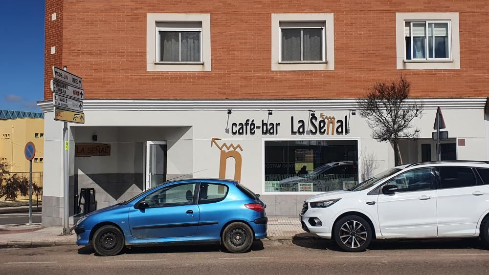
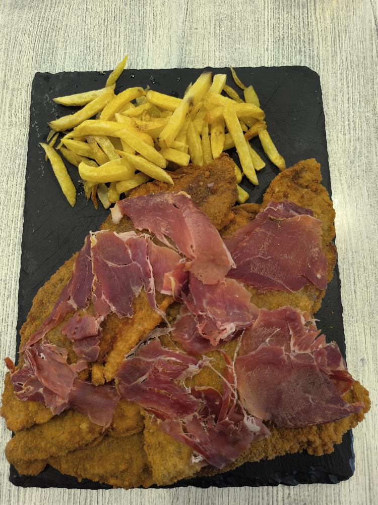
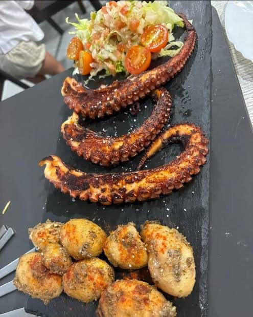
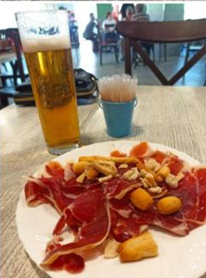
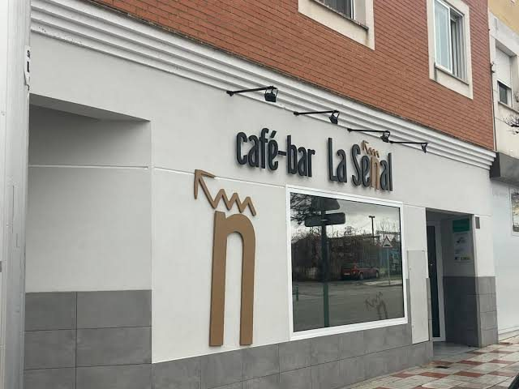

Cafetería-bar
La Señal
Desayunos, café y raciones en la esquina de Manzanedo con Roble. Un bar de barrio en Don Benito para empezar el día y alargar la sobremesa.

Datos del establecimiento
Dónde
Manzanedo, esquina con Roble
06400 Don Benito · Badajoz
Teléfono
924 96 56 69
Publicado · sin confirmar
Horario y teléfono publicados en fichas del local; pendientes de confirmar.
01 · Carta
La carta
La carta se está cerrando con el local. Mientras tanto, esta es una selección visual de seis platos que aparecen en las fotos; los precios y los alérgenos siguen pendientes.
De la cocina
Fotografías de platos del local. En la carta visual están los nombres que se reconocen; los precios siguen pendientes.
-

-

-

02 · Dónde estamos
En la esquina de Manzanedo con Roble
La dirección es un cruce: falta confirmar el portal y el acceso.

Mapa bajo demanda
No se carga al abrir la página. Si lo pides, Google recibirá datos de tu visita.
Abrir en Google MapsHorario
Publicado · sin confirmar- Lunes
- Cerrado
- Martes a jueves
- 6:30 – 24:00
- Viernes y sábado
- 6:30 – 1:00
- Domingo
- 6:30 – 17:00
Fuente: Turismo Badajoz (Diputación) y Restaurant Guru.
Contacto
924 96 56 69
Número publicado en directorios. Al no estar confirmado, no abre una llamada.
Sin WhatsApp ni redes sociales confirmadas.